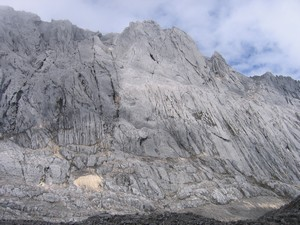
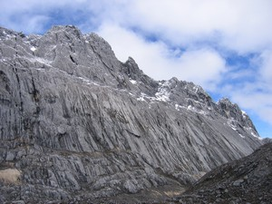
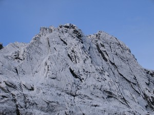
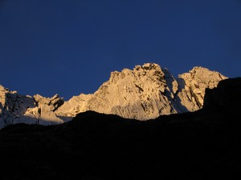
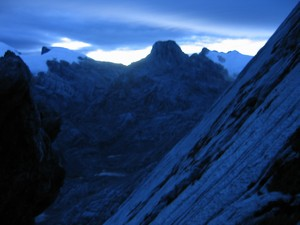
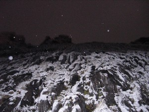
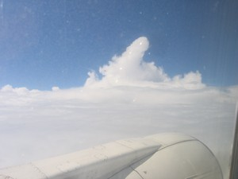
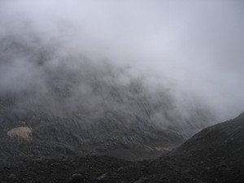

Navigation
- Carstensz Pyramid
- PROGRAMS & SCHEDULE
- Our most imporant expeditions
- LAST CARSTENSZ REFERENCIES
- History of climbing the summit
- Legendary Carstensz climbers
- Seven Summits
- 7 Summits - History
7 faces of Carstensz Pyramid
- Photos from climbing
- The nature and flora
- Trekking around Carstensz
- Climbing routes to the summit
- 7summits Carstensz best Base camp
- The Tribes and People
- Climate and weather
- Climbing permits
- How to go
- The Highest Mountain of Papua New Guinea
- Why to go with us
- Malaria
- Wrote about us
- References
- Links
- Contact us
- Download


More then seven faces of Carstensz Pyramid
(Puncak Jaya) – 4884 m (16023 ft)
Carstensz Pyramid has many faces, depending on the weather.You cannot explore everything during one expedition. You probably won't see all the seven faces of the Carstensz Pyramid, but that's OK – you will be at least left with a reason to return.
If you have already climbed Carstensz and have seen some or all of its seven faces, you can also try climbing other mountains within the 7summits project. The 7 Summits project encompassses climbing on seven highest summits of six continents.
More than seven faces of the Carstensz Pyramid

Carstensz Pyramid – Sunny face Photo©JahodaPetr.com

Carstensz Pyramid – Snow facePhoto©JahodaPetr.com

Carstensz Pyramid – Ice facePhoto©JahodaPetr.com

Carstensz Pyramid – Sun rise facePhoto©JahodaPetr.com

Carstensz Pyramid – Night facePhoto©JahodaPetr.com

Carstensz Pyramid – Star night facePhoto©JahodaPetr.com

Carstensz Pyramid – Sky face from Boeing 737 Photo©JahodaPetr.com

Carstensz Pyramid – Rainig facePhoto©JahodaPetr.com
Carstensz Pyramid – Mist facePhoto©JahodaPetr.com
Carstensz Pyramid – Black night face Photo©JahodaPetr.com